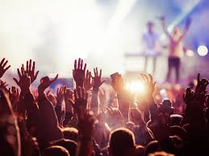
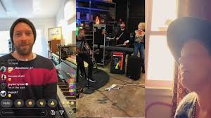
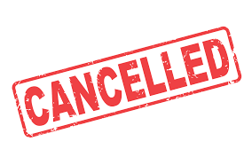
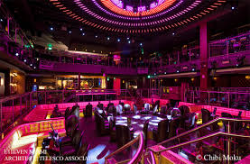

#1 The Cancelation of Live Shows/Tours
One of the major and immediate impacts that this epidemic has had on the industry is the cancellation of live shows and tours. Musicians everywhere were forced to cancel shows and major music festivals needed to either postpone or cancel their events. Millions and millions of dollars were tossed and millions of people were put out of work due to these circumstances. Venues all over the nation had no other choice but to close their doors and wait out this global pandemic. It is uncertain when shows and performances will take place as normal again. The only thing they can do is wait.
#2 The Rise of Live Stream Preformances
With Performances being canceled, artists everywhere have resorted to Live-Stream performances. This is where the artist records themselves preforming from their home or other isolated location. These are becoming more and more common among artists and is an innovative way mot adapt during these tough times. Recently artists have been coming together and putting on live streams to raise money for Coronavirus relief as well. Artists are even going between large apartment buildings and putting on shows for people on their balconies while live-streaming it for the rest of the world. Live-streaming has become the new normal for artists at this time in the world.
#3 Income Cut Short For some Musicians
Most musicians rely on shows and ticket sales as their main source of revenue. Yes, they make some money off streaming but it is not substantial enough to be their main source of income. Now that shows are canceled artists have become creative on developing different ways to replace that steady flow of income. Some organizations are paying artists royalty advances and even waiving royalty fees. While some artists are pushing out merchandise lines and videos in order to make up for their devastating losses. This pandemic exposed that streaming income is just a small portion of an artists salary and in fact artists have relied on live shows a lot more than we would expect.
#4 Nationwide Club/Venue Closures
4. In addition to show cancelations, clubs and venues all over the country have been shutdown. The nightlife aspect of the music industry has also taken a massive hit due to the pandemic. Nightlife is a huge part of some major cities and without it, thousands of workers are unemployed and customers are left helpless. Venues and the secondary industries that surround them are extremely important when it comes to the promotion of events and music. Club owners who are used to constantly holding events or shows are now forced to completely shut down their businesses with no preparation or expectations for the future.